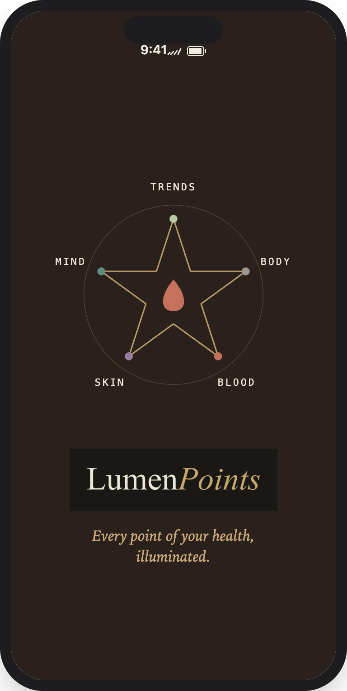

Every point of your health, illuminated.
Supplements, body, blood, skin, and mind — tracked in one app, with AI observations across all five.


Your health data lives in six places.
None of them talk.Supplements in one app. Bloodwork in PDFs from three different labs across five years. Your skincare routine in your head. Body metrics on a scale that talks to nothing. Nothing connects. Nothing carries forward.
LumenPoints is the layer that sits on top of all of it.
Five Points. One app.
Real health isn't one thing. It's five things moving together — and they only make sense side by side.
Supplements
Track your full stack — supplements, peptides, and medications — with daily check-off and reminders by time slot, so the morning ones happen in the morning. Scan a bottle and the label fills itself in.
Body
Weight, body fat, muscle, and visceral fat, trended over time. Syncs with Apple Health and Renpho. Optional cycle tracking, off by default. Your devices already capture all of this — the harder question is what you actually do with it. LumenPoints brings those measurements together with the rest of your Points, so the numbers carry meaning instead of sitting in separate apps.
Blood
Upload lab results from any lab, any year — PDF or photo. Values are shown against your lab's own reference range and tracked across every panel you've ever had. Bloodwork is the measurement that comes from the inside out, and it is far more useful when you can see it as a line across the years rather than a single page in a folder — and more useful still when it sits beside the outside factors you track, your stack, your routine, your sleep, instead of standing alone as numbers on a page.
Skin
Morning and evening routines and your full product library, with gentle reminders so the routine actually happens on the nights you'd skip it. Photograph a product to add it to your library, or upload a routine PDF from your dermatologist or esthetician.
Mind
A daily gratitude journal with a rotating 365-day wisdom and verse system. A quick energy, mood, and stress check-in takes seconds, and those entries are tracked over time so observations can follow the trends in how you feel. A small daily practice that gives you something useful to look back on.
Storage apps hold your data. LumenPoints reads across it.
Observations across all five Points
Your stack alongside your labs. Your routine alongside your goals. LumenPoints surfaces observations across the Points you track, in plain language. Educational and informational only.
Scan the bottle
Point your camera at a supplement label. Name, dose, and form fill themselves in. Data entry is what kills every supplement tracker, so we removed it.
Bloodwork from any lab, any year
Upload a PDF or photo from any lab or doctor's office. Markers are pulled out and shown against your lab's printed reference range, then tracked over time.
Skin and Mind are included
Not add-ons. Two of the five Points, treated as seriously as the labs. Your skin is the outer surface of what is happening underneath, so it belongs next to what you are putting into your body. Your mindset is the same signal read a different way. Neither one is a side note — they are part of the whole picture.
Three seamless steps.
Download and set up your account. One person, one account. About two minutes.
Add what you already have. Scan your supplement bottles, upload a lab PDF, connect Apple Health. Old bloodwork is welcome — it makes the trends better.
Log as you go. Check off your stack, run your routine, write a line in the journal. The app builds the picture.
Never sold, never shared, never used to train AI.
LumenPoints is funded by subscriptions. There is no advertising model here, which means there is no reason for your data to go anywhere. It is yours, it stays yours, and you can delete all of it at any time.
We do not sell your data. There is no ad-supported revenue path.
We do not use your data to train AI models.
We do not share your data with third parties for marketing or analytics.
Delete your account from inside the app and your data goes with it.
Questions, answered.
Be among the first to know.
Join the waitlist and we'll email you the day LumenPoints is on the App Store. One email. No spam, no sharing, ever.
LumenPoints is a wellness app, not a medical service. AI-generated observations and status indicators are educational only and do not constitute medical advice, diagnosis, treatment, or a medical opinion. Using LumenPoints does not create a doctor-patient or other professional relationship. Always consult your physician before making changes to your supplements, medications, or health routine. Do not disregard, avoid, or delay seeking professional medical advice because of anything you see in the app.